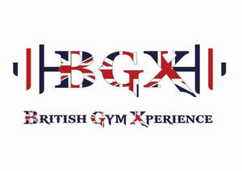

Trade Mark Journal No.2025/025 20 June 2025
UK00004212934 3 June 2025 (28,41)

- Class 28
- Gym balls for yoga; Gym balls; Jungle gyms [play equipment]; Baby gyms; Fitness exercise machines; Exercise treadmills; Elliptical trainers; Treadmills for use in physical exercise; Indoor fitness apparatus; Gym chalk for improving hand grip in sports activities; Fitness steppers; Exercise weights; Leg weights for sports training; Pilates toning balls; Kettlebells; Exercise trampolines; Rowing machines for fitness purposes; Exercise benches; Swimming equipment; Wrist weights for exercise; Weight lifting machines for exercise; Clubs for gymnastics; Dumbbells; Water rowing machines for fitness purposes; Body training apparatus [exercise]; Exercise bars; Body-building apparatus [exercise]; Badminton equipment; Volleyball equipment; Machines incorporating weights for use in physical exercise; Gymnastic training stools; Gymnastic benches; Exercise bikes; Climbing units [playground equipment]; Dumb-bells; Leg weights for exercising; Dumbbells for weight lifting; Tennis uprights [sports equipment]; Storage racks for exercise weights; Leg weights for athletic use; Hoops for exercise; Yoga swings; Dumb-bells [for weight lifting]; Abdominal wheel rollers for fitness purposes; Golf club bags; Spring bars for exercise; Ankle and wrist weights for exercise; Wrist and ankle weights for exercise; Exercise steppers; Punching balls [for boxing practice]; Barbells for weight lifting; Swings [playground equipment]; Chest exercisers; Belts for weightlifting; Punching bags for boxing; Exercise balls; Benches for gymnastic use; Apparatus for use in training for the game of rugby [sporting equipment].
- Class 41
- Gym activity classes; Exercise and fitness classes; Sports and fitness Gymnasium club services; Providing obstacle course training; gym facilities; Exercise [fitness] training services; Fitness and exercise training services; Fitness club services; Fitness and exercise instruction; Training in yoga Aerobic and dance facilities; Providing fitness and exercise facilities; Health and fitness training; Exercise classes; Personal trainer services [fitness training]; Training of swimming teachers; Tuition in physical fitness; Physical fitness tuition; Conducting physical fitness; conditioning classes; Aerobics training services; Gymnasiums Aerobics competitions; Rental of sports or exercise equipment; Golf fitness instruction; Sports and fitness services; Fitness training services; Health and fitness club services; Health club [fitness] services; Physical fitness training services; Conducting fitness classes; Health club services [exercise]; Physical fitness centres; Health club services [health and fitness training]; Provision of health club [physical exercise] facilities; Physical fitness consultation; Sports training; Training in sports; Rental of treadmills; Gymnasium services; Swimming bath facilities ; Swimming facilities; Beach and pool clubs; Gymnasium services relating to weight training; Physical fitness instruction Exercise [fitness] advisory services; Training of sports teachers; Conducting training sessions on physical fitness; online Personal fitness training services; Physical fitness centre services; Providing health club and gymnasium services; Pilates instruction; Booking of exercise facilities .
Laura Visconti
Najib Ouasti